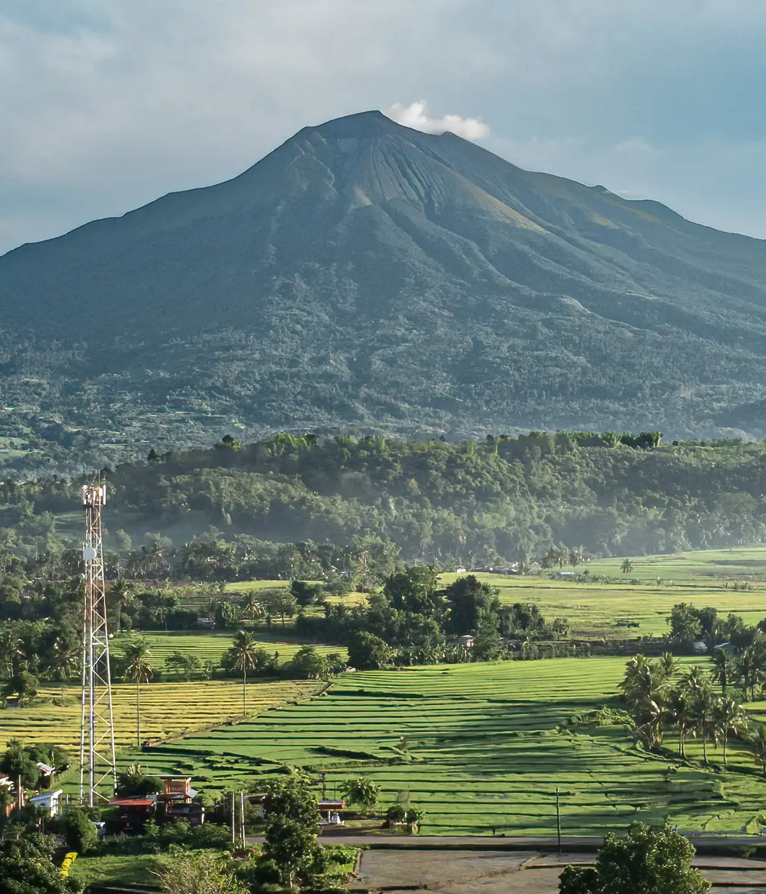

Find Your Next Mountain Adventure
Explore curated trail guides, save your favorite hikes, and connect with nature safely.
Browse All TrailsFeatured Highlights
Curated Maps
Verified trail paths with elevation profiles and difficulty ratings.
Community Verified
Updated daily with real weather conditions and hiker feedback.
Favorites Tracker
Save trails directly to your device for offline planning.